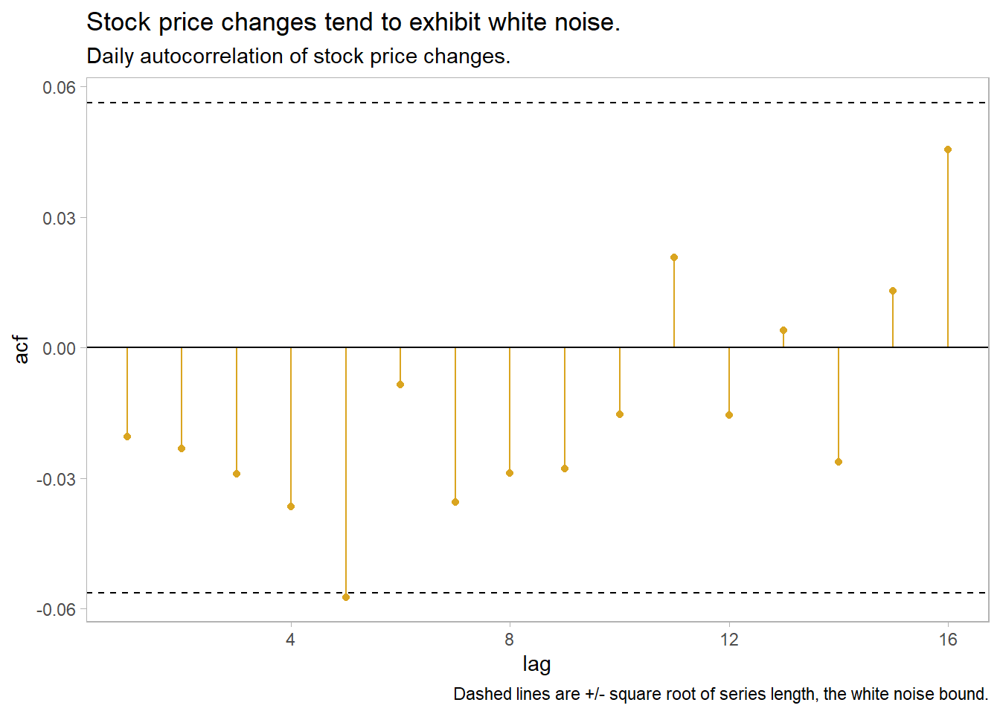
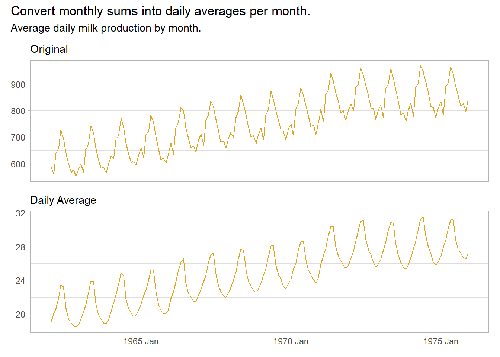
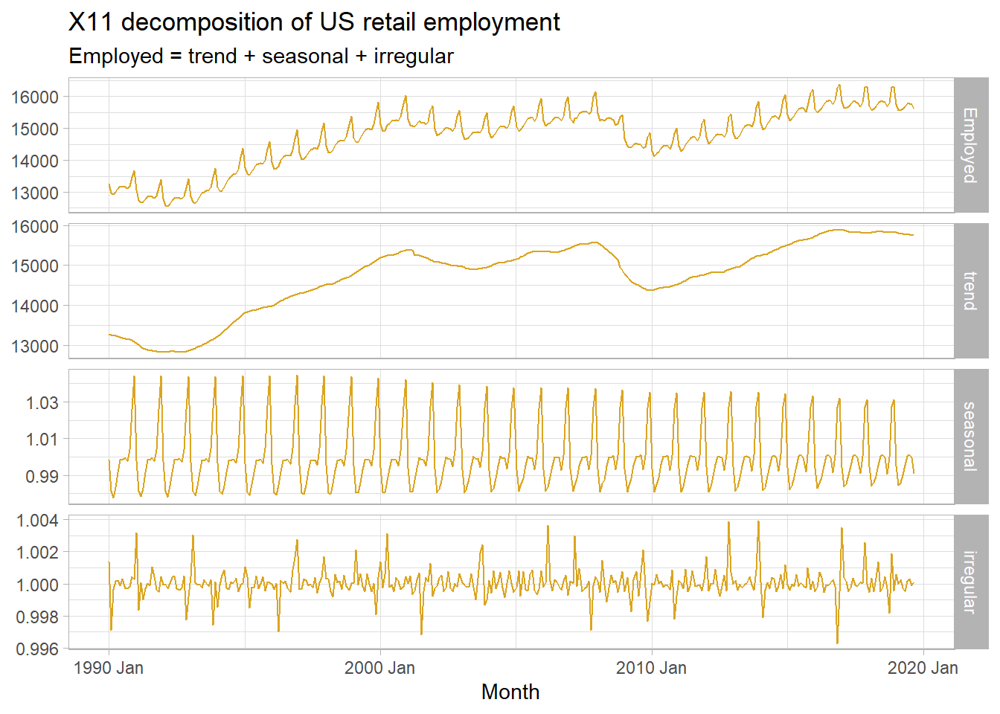
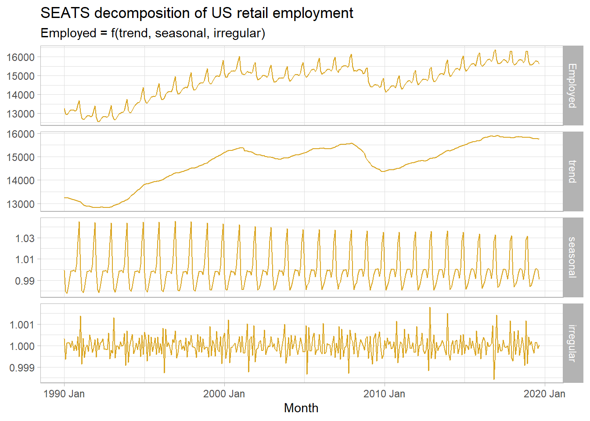
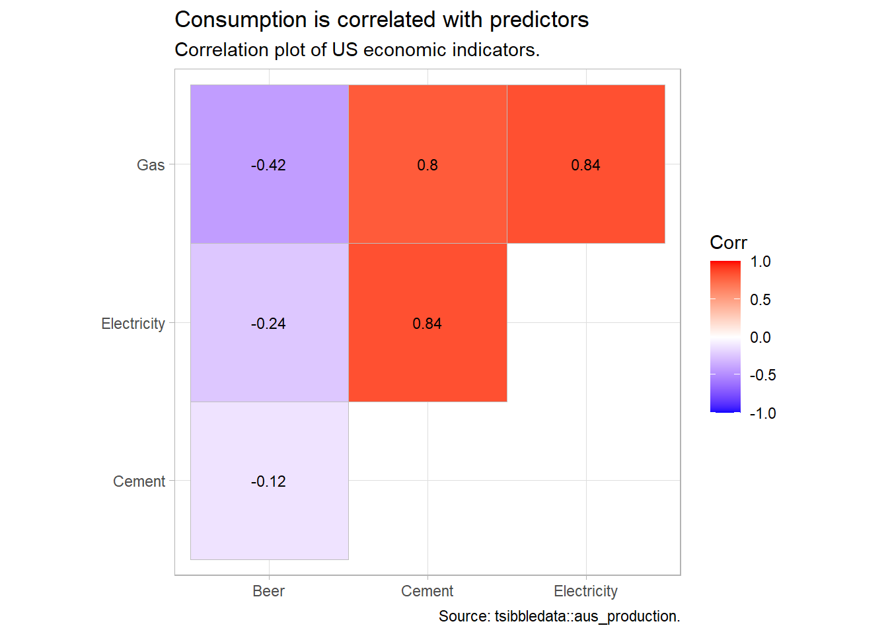

Chapter 2 Exploratory Analysis
Start an analysis by viewing the data values and structure, then take some summary statistics. fabletools::features() is great for this.
## # A tibble: 1 × 6
## mean `quantile_0%` `quantile_25%` `quantile_50%` `quantile_75%`
## <dbl> <dbl> <dbl> <dbl> <dbl>
## 1 415. 213 379. 422 466.
## # ℹ 1 more variable: `quantile_100%` <dbl>There are many autocorrelation features you might want to review. I don’t understand why you’d want to know all of these, but feat_acf has them.
## # A tibble: 1 × 7
## acf1 acf10 diff1_acf1 diff1_acf10 diff2_acf1 diff2_acf10 season_acf1
## <dbl> <dbl> <dbl> <dbl> <dbl> <dbl> <dbl>
## 1 0.684 4.37 -0.221 2.72 -0.361 2.26 0.9402.1 Graphical Analysis
The next task is to plot the data to identify patterns, unusual observations, changes over time, and relationships between variables. Look for trend, cycles, and seasonality in your exploratory plots. These features inform the subsequent forecasting process. ggplot2::autoplot() does a great job picking out the right plot, but I feel more comfortable staying old-school for now.
tsibbledata::ansett %>%
filter(Airports == "MEL-SYD", Class == "Economy") %>%
ggplot(aes(x = Week, y = Passengers)) +
geom_line(color = "goldenrod") +
theme_light() +
labs(title = "Start with a simple time series plot.",
subtitle = "Weekly passenger volume.", x = NULL, y = NULL)
What does this one reveal?
- There was a period in 1989 of zero passengers (strike).
- There was a period in 1992 where passenger load dropped (planes temporarily reconfigured).
- Volume increased during the second half of 1992.
- Several large post-holiday dips in volume.
- Some larger trends of increasing and decreasing volume (the data is cyclic).
- Also appears to be some missing observations. (common practice with missing observations is to impute values with the time series mean.)
If a data series has trend and seasonality, highlight it with feasts::gg_season().
a10 <- tsibbledata::PBS %>%
filter(ATC2 == "A10") %>%
select(Month, Cost) %>%
summarize(Cost = sum(Cost))
p1 <- a10 %>%
filter(year(Month) %in% c(1991, 1995, 2000, 2005)) %>%
ggplot(aes(x = month(Month, label = TRUE, abbr = TRUE), y = Cost,
group = factor(year(Month)),
color = factor(year(Month)),
label = if_else(month(Month) %in% c(1, 12), year(Month), NA_real_))) +
geom_line(show.legend = FALSE) +
geom_text(show.legend = FALSE) +
theme_light() +
theme(axis.text.x = element_text(angle = 90, vjust = 0.25)) +
labs(subtitle = "using gglot", x = NULL, y = NULL)
p2 <- a10 %>%
filter(year(Month) %in% c(1991, 1995, 2000, 2005)) %>%
fill_gaps() %>% # otherwise, gg_season() barks.
gg_season(Cost, labels = "both") +
theme_light() +
theme(axis.text.x = element_text(angle = 90, vjust = 0.25)) +
labs(subtitle = "using feasts", x = NULL, y = NULL)
p1 + p2 +
plot_annotation(title = "Medicare script costs increase from Feb - following Jan.",
subtitle = "12-month seasonality plot, selected years.")
Emphasize the seasonality further by faceting on the sub-series with feasts::gg_subseries().
yint <- a10 %>%
as.tibble() %>%
group_by(month(Month, label = TRUE, abbr = TRUE)) %>%
mutate(mean_cost = mean(Cost) / 1e6)
p1 <- a10 %>%
ggplot(aes(x = year(Month), y = Cost / 1e6)) +
geom_line(show.legend = FALSE, color = "goldenrod") +
geom_hline(data = yint, aes(yintercept = mean_cost), linetype = 2) +
theme_light() +
theme(axis.text.x = element_blank(),
axis.ticks.x = element_blank(),
panel.grid = element_blank()) +
scale_y_continuous(labels = scales::dollar) +
facet_wrap(vars(month(Month, label = TRUE, abbr = TRUE)), nrow = 1) +
labs(subtitle = "using gglot", x = NULL, y = NULL)
p2 <- a10 %>%
mutate(Cost = Cost / 1e6) %>%
fill_gaps() %>% # otherwise, gg_subseries() barks.
gg_subseries(Cost) +
theme_light() +
theme(axis.text.x = element_blank(),
axis.ticks.x = element_blank(),
panel.grid = element_blank()) +
scale_y_continuous(labels = scales::dollar) +
labs(subtitle = "using feasts", x = NULL, y = NULL)
p1 / p2 +
plot_annotation(title = "Medicare script costs follow monthly seasonality, inreasing annually.",
subtitle = "Monthly subseries plot of cost $MM, 1991 - 2009.")Explore the correlation between two quantitative variables with the Pearson correlation coefficient. Recall that the covariance between series \(X\) and \(Y\) is defined \(Cov(X, Y) = E[(X - \mu_X) (Y - \mu_Y)]\) which simplifies to \(Cov(X, Y) = E[XY] - \mu_X \mu_Y\). The covariance of \(X\) and \(Y\) is positive if \(X\) and \(Y\) increase together, negative if they move in opposite directions, and if \(X\) and \(Y\) are independent, \(E[XY] = E[X]E[Y] = \mu_X \mu_Y\), so \(Cov(X, Y) = 0\). Covariance is usually inconvenient because its values depend on the units of the series. Dividing \(Cov(X, Y)\) by the standard deviations \(\sigma_X \sigma_Y\) creates a unit-less variable with range [-1, 1], also known as the Pearson correlation.3
\[\rho = \frac{\sigma_{XY}} {\sigma_X \sigma_Y}.\]
PBS %>%
group_by(ATC1) %>%
summarize(.groups = "drop", Cost = sum(Cost)) %>%
pivot_wider(names_from = ATC1, values_from = Cost) %>%
as_tibble() %>%
select(-Month) %>%
cor() %>%
ggcorrplot::ggcorrplot() +
theme_light() +
labs(title = "Z and P indexes negatively correlated with others.",
subtitle = "Correlation plot of Medicare ATC1 indexes.",
x = NULL, y = NULL)
Autocorrelation is correlation with lagging observations. Lag plots of current period vs lags are a particular kind of correlation scatterplot useful for identifying seasonality. feasts::ACF() extends the base R acf() function to tsibbles. aus_production contains quarterly production levels. The 4-period lag is a year-over-year correlation and is strong because of seasonality in production. The 8-period lag is less strong. The 1-, 2-, and 3-period lags are not positively correlated. In fact, the lag-2 is negatively correlated.
prod2k <- tsibbledata::aus_production %>%
filter(year(Quarter) >= 2000)
prod2k %>%
gg_lag(Beer, geom = "point") +
theme_light() +
labs(title = "Production is seasonal with Q4 peak, Q1 second.",
subtitle = "Quarterly lag plot of beer production",
x = NULL, y = NULL) 
p1 <- prod2k %>%
ACF(Beer, lag_max = 16) %>%
ggplot(aes(x = lag)) +
geom_linerange(aes(ymin = 0, ymax = acf), color = "goldenrod") +
geom_point(aes(y = acf), color = "goldenrod") +
geom_hline(yintercept = 0) +
geom_hline(yintercept = -2 / sqrt(nrow(prod2k)), linetype = 2) +
geom_hline(yintercept = +2 / sqrt(nrow(prod2k)), linetype = 2) +
theme_light() +
theme(panel.grid = element_blank()) +
labs(subtitle = "using ggplot", y = NULL)
p2 <- prod2k %>%
ACF(Beer, lag_max = 16) %>%
autoplot() +
theme_light() +
labs(subtitle = "using autoplot", y = NULL)
p1 + p2 +
plot_annotation(title = "Strongest correlation is 4-period lag, negative 2-period lag.",
subtitle = "Quarterly autocorrelation of beer production.",
caption = "Dashed lines are +/- square root of series length, the white noise bound.")Autocorrelation for trending data tends to be large and positive because observations nearby in time are also nearby in size. The ACF tends to have positive values that slowly decrease as the lags increase.
Autocorrelation for seasonal data tends to be larger for the seasonal lags (at multiples of the seasonal frequency). The Quarterly Australian Beer Production ACF above shows seasonality.
Autocorrelation for both trended and seasonal data has a combination of these effects.
Time series that show no autocorrelation are called white noise. White noise series have near-zero autocorrelation. Stock price changes often exhibit white noise. Almost all lags have autocorrelation insignificantly different from zero. Expect 95% of spikes to lie withing \(\pm 2 / \sqrt{T}\) where \(T\) is the length of the data series.
stock <- tsibbledata::gafa_stock %>%
filter(Symbol == "FB") %>%
mutate(l1 = Close - lag(Close))
stock %>%
ACF(l1, lag_max = 16) %>%
ggplot(aes(x = lag)) +
geom_linerange(aes(ymin = 0, ymax = acf), color = "goldenrod") +
geom_point(aes(y = acf), color = "goldenrod") +
geom_hline(yintercept = 0) +
geom_hline(yintercept = -2 / sqrt(nrow(stock)), linetype = 2) +
geom_hline(yintercept = +2 / sqrt(nrow(stock)), linetype = 2) +
theme_light() +
theme(panel.grid = element_blank()) +
labs(title = "Stock price changes tend to exhibit white noise.",
subtitle = "Daily autocorrelation of stock price changes.",
caption = "Dashed lines are +/- square root of series length, the white noise bound.")
The Ljung-Box test tests the randomness of a series; a p-value under 0.05 rejects the null hypothesis of white noise. The test reject white noise for the beer production, but not for stock price changes.
Box.test(prod2k$Beer, lag = 16, fitdf = 0, type = "Ljung")
##
## Box-Ljung test
##
## data: prod2k$Beer
## X-squared = 187.44, df = 16, p-value < 2.2e-16
Box.test(stock$l1, lag = 16, fitdf = 0, type = "Ljung")
##
## Box-Ljung test
##
## data: stock$l1
## X-squared = 16.745, df = 16, p-value = 0.40232.2 Transformations
Remove known sources of variation (e.g., days per month, population growth, inflation). E.g., monthly totals may vary due to differing month lengths.
milk <- fma::milk %>%
as_tsibble() %>% # milk is a `ts` object
mutate(daily_avg = value / lubridate::days_in_month(index))
p1 <- milk %>%
ggplot(aes(x = index, y = value)) +
geom_line(color = "goldenrod") +
theme_light() +
theme(axis.text.x = element_blank()) +
labs(subtitle = "Original", x = NULL, y = NULL)
p2 <- milk %>%
ggplot(aes(x = index, y = daily_avg)) +
geom_line(color = "goldenrod") +
theme_light() +
labs(subtitle = "Daily Average", x = NULL, y = NULL)
p1 / p2 +
plot_annotation(title = "Convert monthly sums into daily averages per month.",
subtitle = "Average daily milk production by month.")
Make patterns more consistent across the data set. Simpler patterns usually lead to more accurate forecasts. A Box-Cox transformation can equalize seasonal variation.
\[w_t = \begin{cases} \mathrm{log}(y_t), & \mbox{if } \lambda\mbox{ = 0} \\ \left(\mathrm{sign}(y_t) |y_t|^\lambda - 1 \right) / \lambda, & \mbox{otherwise} \end{cases}\]
\(\lambda\) can take any value, but values near the following yield familiar transformations.
- \(\lambda = 1\): no substantive transformation.
- \(\lambda = 0.5\): square root plus linear transformation.
- \(\lambda = 0.333\): cube root plus linear transformation.
- \(\lambda = 0\): natural log.
- \(\lambda = -1\): inverse.
A good value of \(\lambda\) is one which makes the size of the seasonal variation about the same across the whole series. fabletools::features() and BoxCox.lambda() optimize \(\lambda\), but try to choose a simple value to make interpretation clearer. Note that while forecasts are not sensitive to \(\lambda\), prediction intervals are.
lambda <- tsibbledata::aus_production %>%
# guerrero() applies Guerrero's method to select lambda that minimizes the
# coefficient of variation: .12.
features(Gas, features = guerrero) %>%
pull(lambda_guerrero)
# supposedly the same method, but returns .10 instead.
lambda_v2 <- forecast::BoxCox.lambda(aus_production$Gas, method = "guerrero")
p1 <- aus_production %>%
mutate(gas_xform = box_cox(Gas, lambda)) %>%
ggplot(aes(x = Quarter)) +
geom_line(aes(y = Gas), color = "goldenrod") +
theme_light() +
theme(axis.text.x = element_blank()) +
labs(subtitle = "Original", x = NULL)
p2 <- aus_production %>%
mutate(gas_xform = box_cox(Gas, lambda)) %>%
ggplot(aes(x = Quarter)) +
geom_line(aes(y = gas_xform), color = "goldenrod") +
theme_light() +
labs(subtitle = glue("Box-Cox, lambda = {scales::comma(lambda, accuracy = 0.01)}"),
y = glue("Gas^{scales::comma(lambda, accuracy = 0.01)}"))
p1 / p2 +
plot_annotation(title = "Box-Cox transformation equalizes the seasonal component.",
subtitle = "Box-Cox transformation (Guerrero's method) of quarterly gas production.")2.3 Decomposition
Time series data often has trending, seasonality, and cycles. It’s usually useful to lump trending and cycles into a trend-cycle components, or simply “trend”, and treat time series data as consisting of seasonality \(S_t\), trend \(T_t\), and a remainder \(R_t\). If the magnitude of the seasonal fluctuations and the variation in the trend cycle are constant, then these components are additive, \(y_t = S_t + T_t + R_t\); if they are proportional to the level, then these components are multiplicative, \(y_t = S_t \times T_t \times R_t\).
2.3.1 Classical Decomposition
Classical decomposition was commonly used until the 1950s. It is still the basis of other methods, so it is good to understand. Classical decomposition is based on moving averages. An m-MA moving average of order \(m = 2k + 1\) averages the \(k\) observations before \(t\) through the \(k\) observations after \(t\). The slider package is great for this. \(m\) is usually an odd number so that the number of periods before and after are equal.
\[\hat{T}_t = \frac{1}{m}\sum_{j = -k}^k y_{t+j}\]
## Warning: package 'slider' was built under R version 4.3.1tsibbledata::global_economy %>%
filter(Country == "Australia") %>%
mutate(
`3-MA` = slide_dbl(Exports, mean, .before = 1, .after = 1, .complete = TRUE),
`5-MA` = slide_dbl(Exports, mean, .before = 2, .after = 2, .complete = TRUE),
`7-MA` = slide_dbl(Exports, mean, .before = 3, .after = 3, .complete = TRUE),
`9-MA` = slide_dbl(Exports, mean, .before = 4, .after = 4, .complete = TRUE)
) %>%
pivot_longer(cols = ends_with("-MA"), names_to = "MA_name", values_to = "MA") %>%
ggplot(aes(x = Year)) +
geom_line(aes(y = MA, color = MA_name), na.rm = TRUE) +
geom_line(aes(y = Exports), size = 1.25, color = "#000000", alpha = 0.4) +
theme_light() +
# guides(color = guide_legend(title = "series")) +
labs(title = "m-MA simple moving averages smooth a time series.",
subtitle = "m-MA of annual export proportion of GDP for m = 3, 5, 7, 9.",
x = NULL, y = "Pct of GDP", color = NULL)But what if you have known seasonal periods in the data? For example, with quarterly seasonality it makes sense to take a moving average of the 4 periods at once. Do this with a moving average of a four-period moving average.
tsibbledata::aus_production %>%
filter(year(Quarter) >= 1992) %>%
mutate(
`4-MA` = slide_dbl(Beer, mean, .before = 1, .after = 2, .complete = TRUE),
`2x4-MA` = slide_dbl(`4-MA`, mean, .before = 1, .after = 0, .complete = TRUE)
) %>%
pivot_longer(cols = ends_with("-MA"), names_to = "MA_type", values_to = "MA") %>%
ggplot(aes(x = Quarter)) +
geom_line(aes(y = Beer), color = "gray", size = 1) +
geom_line(aes(y = MA, color = MA_type), na.rm = TRUE) +
theme_light() +
ggthemes::scale_color_few() +
guides(color = guide_legend(title = "series")) +
labs(title = "MAs of MAs smooth seasonal periods.",
subtitle = "2-MA of a 4-MA for quarterly data.",
y = NULL)
Classical decomposition calculates a trend-cycle component \(\hat{T}_t\) with an m-MA (odd order) or \(2 \times m\)-MA. The de-trended series is the difference, \(y_t - \hat{T}_t\). The seasonal component \(\hat{S}_t\) is the seasonal average (e.g., for monthly seasons, then \(\hat{S}_1\) would be the January average). The remainder is the residual, \(\hat{R}_t = y_t - \hat{T}_t - \hat{S}_t.\) If the cycle variation and seasonal magnitude increases with the observation level, then the same principles apply except the subtrations are replaced with divisions, \(y_t / \hat{T}_t\) and remainder \(\hat{R}_t = y_t / (\hat{T}_t \hat{S}_t)\).
fpp3::us_employment %>%
filter(year(Month) >= 1990 & Title == "Retail Trade") %>%
model(classical = classical_decomposition(Employed, type = "additive")) %>%
components() %>%
pivot_longer(cols = Employed:random,
names_to = "component", values_to = "employed") %>%
mutate(component = factor(component,
levels = c("Employed", "trend", "seasonal", "random"))) %>%
ggplot(aes(x = Month, y = employed)) +
geom_line(na.rm = TRUE, color = "goldenrod") +
theme_light() +
facet_grid(vars(component), scales = "free_y") +
labs(title = "Classical additive decomposition of US retail employment",
subtitle = "Employed = trend + seasonal + random",
y = NULL)
Classical decomposition has weaknesses: the trend-cycle is unavailable for the first few and and last few periods; it assumes the seasonal component is stable over time; and it also tends to over-smooth the data.
2.3.2 X-11 and SEATS
X-11 and Seasonal Extraction in ARIMA Time Series (SEATS) are commonly used by governmental agencies. X-11 overcomes some of classical decomposition’s drawbacks by adding extra steps. It creates trend-cycle estimates for all periods, and accommodates a slowly varying seasonal component.
fpp3::us_employment %>%
filter(year(Month) >= 1990 & Title == "Retail Trade") %>%
model(x11 = X_13ARIMA_SEATS(Employed ~ x11())) %>%
components() %>%
pivot_longer(cols = Employed:irregular,
names_to = "component", values_to = "employed") %>%
mutate(component = factor(component,
levels = c("Employed", "trend", "seasonal", "irregular"))) %>%
ggplot(aes(x = Month, y = employed)) +
geom_line(na.rm = TRUE, color = "goldenrod") +
theme_light() +
facet_grid(vars(component), scales = "free_y") +
labs(title = "X11 decomposition of US retail employment",
subtitle = "Employed = trend + seasonal + irregular",
y = NULL)
SEATS is another one (too complicated to discuss evidently!).
fpp3::us_employment %>%
filter(year(Month) >= 1990 & Title == "Retail Trade") %>%
model(x11 = X_13ARIMA_SEATS(Employed ~ seats())) %>%
components() %>%
pivot_longer(cols = Employed:irregular,
names_to = "component", values_to = "employed") %>%
mutate(component = factor(component,
levels = c("Employed", "trend", "seasonal", "irregular"))) %>%
ggplot(aes(x = Month, y = employed)) +
geom_line(na.rm = TRUE, color = "goldenrod") +
theme_light() +
facet_grid(vars(component), scales = "free_y") +
labs(title = "SEATS decomposition of US retail employment",
subtitle = "Employed = f(trend, seasonal, irregular)",
y = NULL)2.3.3 STL
Seasonal and Trend decomposition using Loess (STL) has several advantages over classical decomposition, and the SEATS and X-11 methods. It handles any type of seasonality (not just monthly and quarterly); the seasonality component can change; the smoothness of the trend-cycle can be changed by the modeler; and it is robust to outliers.
The widow settings inside model() control how rapidly the components change.
fpp3::us_employment %>%
filter(year(Month) >= 1990 & Title == "Retail Trade") %>%
model(STL = STL(Employed ~ trend(window = 7) + season(window = "periodic"),
robust = TRUE)) %>%
components() %>%
pivot_longer(cols = Employed:remainder,
names_to = "component", values_to = "employed") %>%
mutate(component = factor(component,
levels = c("Employed", "trend", "season_year", "remainder"))) %>%
ggplot(aes(x = Month, y = employed)) +
geom_line(na.rm = TRUE, color = "goldenrod") +
theme_light() +
facet_grid(vars(component), scales = "free_y") +
labs(title = "STL decomposition of US retail employment",
subtitle = "Employed = f(trend, seasonal, irregular)",
y = NULL)
STL decomposition is the basis for other insights into the data series. You can measure the relative strength of trend and seasonality by the relative size of their variance: \(F_T = 1 - \mathrm{Var}(R_T) / \mathrm{Var}(R_T + T_T)\) and \(F_S = 1 - \mathrm{Var}(S_T) / \mathrm{Var}(S_T + T_T)\).
us_employment_featues <- fpp3::us_employment %>%
features(Employed, feat_stl) %>%
inner_join(fpp3::us_employment %>% as_tibble() %>% select(Series_ID, Title) %>% unique(),
by = "Series_ID")
us_1 <- us_employment_featues %>%
filter(trend_strength >= 0.995 & seasonal_strength_year > 0.9) %>%
slice_sample(n = 1) %>%
pull(Series_ID)
us_2 <- us_employment_featues %>%
filter(trend_strength >= 0.995 & seasonal_strength_year < 0.5) %>%
slice_sample(n = 1) %>%
pull(Series_ID)
us_3 <- us_employment_featues %>%
filter(trend_strength <= 0.985 & seasonal_strength_year < 0.5) %>%
slice_sample(n = 1) %>%
pull(Series_ID)
us_4 <- us_employment_featues %>%
filter(trend_strength <= 0.985 & seasonal_strength_year > 0.9) %>%
slice_sample(n = 1) %>%
pull(Series_ID)
us_employment_ids <- c(us_1, us_2, us_3, us_4)
us_employment_featues %>%
mutate(Series_lbl = if_else(Series_ID %in% us_employment_ids, Title, NA_character_)) %>%
ggplot(aes(x = trend_strength, y = seasonal_strength_year)) +
geom_point(color = "goldenrod") +
geom_text(aes(label = Series_lbl), color = "goldenrod4") +
theme_light() +
labs(title = "Some sectors have seasonal employment, othes trend, others both.")
Incidentally, \(\rho\) is related to the slope of the linear regression line: \(\beta_1 = \frac{\sigma_{XY}}{\sigma_X^2} = \rho \frac{\sigma_Y}{\sigma_X}\).↩︎